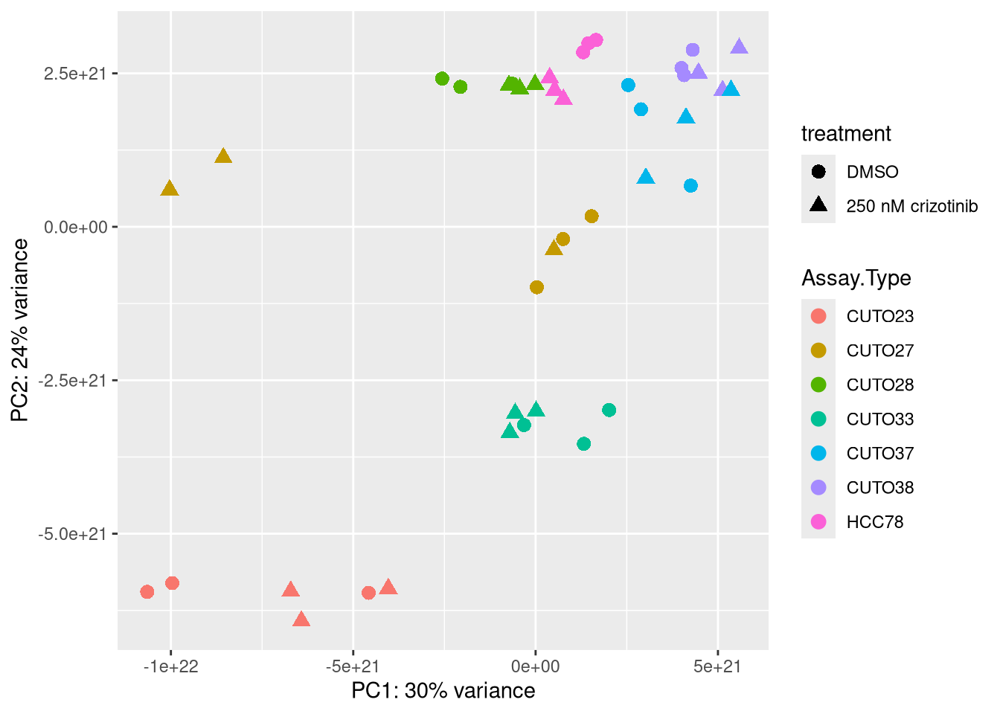

python: /homes/rreilman/miniforge3/envs/ROS1/bin/python
libpython: /homes/rreilman/miniforge3/envs/ROS1/lib/libpython3.10.so
pythonhome: /homes/rreilman/miniforge3/envs/ROS1:/homes/rreilman/miniforge3/envs/ROS1
version: 3.10.16 | packaged by conda-forge | (main, Apr 3 2025, 14:23:09) [GCC 13.3.0]
numpy: /homes/rreilman/miniforge3/envs/ROS1/lib/python3.10/site-packages/numpy
numpy_version: 2.2.6
NOTE: Python version was forced by use_python() functionLogging ROS1 medicational research
This logbook contains the logs of the research part of the bio-informatics minor at the Hanze in 2025-2026.
- Author: Ramon Reilman
- Class: BFV3
- Minor: Bio-informatics
First things First
The first thing done for this minor is researching the best working time for the medication series, we have no involvement in this part. We do need to select genes, done by Jasper Jonker, and design / find primers for these. This has to be done to QPCR (quantative) these given genes, so that we can do a transcriptomics analasis on the sequencing data.
Gene choices
Literary research was done by Jasper, the findings and gene choices can be found in his logbook
Primers
After speaking to the head of the labwork, we came to an agreement on primer design. This agreement came wth a set of rules for designing these primers, listed below.
- Melting temp: Preferably around 60 degrees celcius
- Length range: 15-25 with a preference of 20 base pairs.
- No circular primer forming.
- Tools: primerblast
A list of genes will be created to be used for the qPCR. This list will be given by Jasper. I’m going to write a script that can download the sequences of DNA of these genes in fasta format.
{'DbList': ['pubmed', 'protein', 'nuccore', 'ipg', 'nucleotide', 'structure', 'genome', 'annotinfo', 'assembly', 'bioproject', 'biosample', 'blastdbinfo', 'books', 'cdd', 'clinvar', 'gap', 'gapplus', 'grasp', 'dbvar', 'gene', 'gds', 'geoprofiles', 'medgen', 'mesh', 'nlmcatalog', 'omim', 'orgtrack', 'pmc', 'proteinclusters', 'pcassay', 'protfam', 'pccompound', 'pcsubstance', 'seqannot', 'snp', 'sra', 'taxonomy', 'biocollections', 'gtr']}This contains a list of the different databases that can be accessed, we want to use the gene database to get the nucleotide sequences
This outputs many sequences for possibly the same gene, i want to check if they are the same sequences or not.
'NM_002086.5_Homo sapiens (human)'All sequences are equal to eachother, so the first can be used. These can be turned into a multifasta format
'>NM_002086.5_Homo sapiens (human)\nAGCCAGGAGGTATTGCTGCTTCGGCGACCGGGCGGCGGCAGCGGCGGCGGCGGCTGTGGCAGAGTCTGTGCCTGTGGCGGTGACGGCGGCGGGAGCAAGCGCTGCCCTCGCAGAGCAGCCTTGGGGTCGCCGGCCGCTCGCAGCGTTGTGGAGGGGCGGGCCGGACGCTGAGCGGAGCAGCTGCGCCACGGGTGGCATTGTGTGTCCCAGAGTGCCGGAGCGAGTCCCAGAAGAGAGGCGAGGCTAAGCCCAGAGCGCTGGGTTGCTTCAGCAGGGAAGACTCCCTTCCCCCTGCTTCAGGCTGCTGAGCACTGAGCAGCGCTCAGAATGGAAGCCATCGCCAAATATGACTTCAAAGCTACTGCAGACGACGAGCTGAGCTTCAAAAGGGGGGACATCCTCAAGGTTTTGAACGAAGAATGTGATCAGAACTGGTACAAGGCAGAGCTTAATGGAAAAGACGGCTTCATTCCCAAGAACTACATAGAAATGAAACCACATCCGTGGTTTTTTGGCAAAATCCCCAGAGCCAAGGCAGAAGAAATGCTTAGCAAACAGCGGCACGATGGGGCCTTTCTTATCCGAGAGAGTGAGAGCGCTCCTGGGGACTTCTCCCTCTCTGTCAAGTTTGGAAACGATGTGCAGCACTTCAAGGTGCTCCGAGATGGAGCCGGGAAGTACTTCCTCTGGGTGGTGAAGTTCAATTCTTTGAATGAGCTGGTGGATTATCACAGATCTACATCTGTCTCCAGAAACCAGCAGATATTCCTGCGGGACATAGAACAGGTGCCACAGCAGCCGACATACGTCCAGGCCCTCTTTGACTTTGATCCCCAGGAGGATGGAGAGCTGGGCTTCCGCCGGGGAGATTTTATCCATGTCATGGATAACTCAGACCCCAACTGGTGGAAAGGAGCTTGCCACGGGCAGACCGGCATGTTTCCCCGCAATTATGTCACCCCCGTGAACCGGAACGTCTAAGAGTCAAGAAGCAATTATTTAAAGAAAGTGAAAAATGTAAAACACATACAAAAGAATTAAACCCACAAGCTGCCTCTGACAGCAGCCTGTGAGGGAGTGCAGAACACCTGGCCGGGTCACCCTGTGACCCTCTCACTTTGGTTGGAACTTTAGGGGGTGGGAGGGGGCGTTGGATTTAAAAATGCCAAAACTTACCTATAAATTAAGAAGAGTTTTTATTACAAATTTTCACTGCTGCTCCTCTTTCCCCTCCTTTGTCTTTTTTTTCATCCTTTTTTCTCTTCTGTCCATCAGTGCATGACGTTTAAGGCCACGTATAGTCCTAGCTGACGCCAATAATAAAAAACAAGAAACCAAGTGGGCTGGTATTCTCTCTATGCAAAATGTCTGTTTTAGTTGGAATGACTGAAAGAAGAACAGCTGTTCCTGTGTTCTTCGTATATACACACAAAAAGGAGCGGGCAGGGCCGCTCGATGCCTTTGCTGTTTAGCTTCCTCCAGAGGAGGGGACTTGTAGGAATCTGCCTTCCAGCCCAGACCCCCAGTGTATTTTGTCCAAGTTCACAGTAGAGTAGGGTAGAAGGAAAGCATGTCTCTGCTTCCATGGCTTCCTGAGAAAGCCCACCTGGGCTGGGCGCGGTGGCTCACGCCTGTAATCCCAGCACTTTGGGAGGCCAAGGTGGGCGGATCACAAGGTCAGGAGTTCGAGACCAACCTAGCCAACATGGTGAAACCCCGTCTCTACTAAAAATAAGAAATTAGCCGGGTGTGGCACGCACCTGTAGTCCCAGCTACTTGGGAGCCTGAGGCAGGAGAATCGCTTGAACCTGGGAAGTGGAGGTTGAGTGAGCCGGGACCGTGCCATTGTACTCCAGCCTGGGTGACAGAGCGAGATTCCGTCTCAAAAAAAAAAAAAAAAAGCCCACCTGAAAGCCTGTCTCTTTCCACTTTGTTGGCCCTTCCAGTGGGATTATCGAGCATGTTGTTTTTTCATAGTGCCTTTTTCCTTATTTCAAGGGTTGCTTCTGAGTGGTGTTTTTTTTTTTTTTTTAATTTGTTTTGTTTTAAAATAAGTTAAAGGCAGTCCAGAGCTTTTCAGCCAATTTGTCTCCTACTCTGTGTAAATATTTTTCCCTCCGGGCAGGGGAGCCAGGGTAGAGCAAAGGAGACAAAGCAGGAGTGGAAGGTGAGGCGTTCTCCTGCTTGTACTAAGCCAGGAGGCTTTAAGCTCCAGCTTTAAGGGTTGTGAGCCCCTTGGGGGTTCAGGGAACTGCTTGCCCAGGGTGCAGTGTGAGTGTGATGGGCCACCGGGGCAAGAGGGAAGGTGACCGCCCAGCTCTCCCACATCCCACTGGATCTGGCTTACAGGGGGGTCGGAAGCCTGTCCTCACCGTCTCGGGGGTTGTGGCCCCCGCCCCCTCCCTATATGCACCCCTGGAACCAGCAAGTCCCAGACAAGGAGAGCGGAGGAGGAAGTCATGGGAACGCAGCCTCCAGTTGTAGCAGGTTTCACTATTCCTATGCTGGGGTACACAGTGAGAGTACTCACTTTTCACTTGTCTTGCTCTTAGATTGGGCCATGGCTTTCATCCTGTGTCCCCTGACCTGTCCAGGTGAGTGTGAGGGCAGCACTGGGAAGCTGGAGTGCTGCTTGTGCCTCCCTTCCCAGTGGGCTGTGTTGACTGCTGCTCCCCACCCCTACCGATGGTCCCAGGAAGCAGGGAGAGTTGGGGAAGGCAAGATTGGAAAGACAGGAAGACCAAGGCCTCGGCAGAACTCTCTGTCTTCTCTCCACTTCTGGTCCCCTGTGGTGATGTGCCTGTAATCTTTTTCTCCACCCAAACCCCTTCCCACGACAAAAACAAGACTGCCTCCCTCTCTTCCGGGAGCTGGTGACAGCCTTGGGCCTTTCAGTCCCAAAGCGGCCGATGGGAGTCTCCCTCCGACTCCAGATATGAACAGGGCCCAGGCCTGGAGCGTTTGCTGTGCCAGGAGGCGGCAGCTCTTCTGGGCAGAGCCTGTCCCCGCCTTCCCTCACTCTTCCTCATCCTGCTTCTCTTTTCCTCGCAGATGATAAAAGGAATCTGGCATTCTACACCTGGACCATTTGATTGTTTTATTTTGGAATTGGTGTATATCATGAAGCCTTGCTGAACTAAGTTTTGTGTGTATATATTTAAAAAAAAAATCAGTGTTTAAATAAAGACCTATGTACTTAATCCTTTAACTCTGCGGATAGCATTTGGTAGGTAGTGATTAACTGTGAATAATAAATACACAATGAATTCTTCA'3307And just like that we have a fasta file containing the sequence of a given gene. I will now create a script that takes a file of gene names, and turns in into a multifasta file.
These fasta files will be pulled as the mRNA variant 1 transcripts of the genes, the GRB2 variant 1 page can be found here
We can design primers for these sequences using primer blast. Which takes some parameters to create these primers. I’m going to do a test-run with the fasta file generated above. I will load in these primers, with the selected parameters and discus the output of primer blast.
Warning in read.table(file = file, header = header, sep = sep, quote = quote, :
incomplete final line found by readTableHeader on
'/students/2025-2026/ros1_transcriptomics/minor_ROS1/data/showcase.fasta'| X.NM_002086.5_Homo.sapiens..human. |
|---|
| AGCCAGGAGGTATTGCTGCTTCGGCGACCGGGCGGCGGCAGCGGCGGCGGCGGCTGTGGCAGAGTCTGTGCCTGTGGCGGTGACGGCGGCGGGAGCAAGCGCTGCCCTCGCAGAGCAGCCTTGGGGTCGCCGGCCGCTCGCAGCGTTGTGGAGGGGCGGGCCGGACGCTGAGCGGAGCAGCTGCGCCACGGGTGGCATTGTGTGTCCCAGAGTGCCGGAGCGAGTCCCAGAAGAGAGGCGAGGCTAAGCCCAGAGCGCTGGGTTGCTTCAGCAGGGAAGACTCCCTTCCCCCTGCTTCAGGCTGCTGAGCACTGAGCAGCGCTCAGAATGGAAGCCATCGCCAAATATGACTTCAAAGCTACTGCAGACGACGAGCTGAGCTTCAAAAGGGGGGACATCCTCAAGGTTTTGAACGAAGAATGTGATCAGAACTGGTACAAGGCAGAGCTTAATGGAAAAGACGGCTTCATTCCCAAGAACTACATAGAAATGAAACCACATCCGTGGTTTTTTGGCAAAATCCCCAGAGCCAAGGCAGAAGAAATGCTTAGCAAACAGCGGCACGATGGGGCCTTTCTTATCCGAGAGAGTGAGAGCGCTCCTGGGGACTTCTCCCTCTCTGTCAAGTTTGGAAACGATGTGCAGCACTTCAAGGTGCTCCGAGATGGAGCCGGGAAGTACTTCCTCTGGGTGGTGAAGTTCAATTCTTTGAATGAGCTGGTGGATTATCACAGATCTACATCTGTCTCCAGAAACCAGCAGATATTCCTGCGGGACATAGAACAGGTGCCACAGCAGCCGACATACGTCCAGGCCCTCTTTGACTTTGATCCCCAGGAGGATGGAGAGCTGGGCTTCCGCCGGGGAGATTTTATCCATGTCATGGATAACTCAGACCCCAACTGGTGGAAAGGAGCTTGCCACGGGCAGACCGGCATGTTTCCCCGCAATTATGTCACCCCCGTGAACCGGAACGTCTAAGAGTCAAGAAGCAATTATTTAAAGAAAGTGAAAAATGTAAAACACATACAAAAGAATTAAACCCACAAGCTGCCTCTGACAGCAGCCTGTGAGGGAGTGCAGAACACCTGGCCGGGTCACCCTGTGACCCTCTCACTTTGGTTGGAACTTTAGGGGGTGGGAGGGGGCGTTGGATTTAAAAATGCCAAAACTTACCTATAAATTAAGAAGAGTTTTTATTACAAATTTTCACTGCTGCTCCTCTTTCCCCTCCTTTGTCTTTTTTTTCATCCTTTTTTCTCTTCTGTCCATCAGTGCATGACGTTTAAGGCCACGTATAGTCCTAGCTGACGCCAATAATAAAAAACAAGAAACCAAGTGGGCTGGTATTCTCTCTATGCAAAATGTCTGTTTTAGTTGGAATGACTGAAAGAAGAACAGCTGTTCCTGTGTTCTTCGTATATACACACAAAAAGGAGCGGGCAGGGCCGCTCGATGCCTTTGCTGTTTAGCTTCCTCCAGAGGAGGGGACTTGTAGGAATCTGCCTTCCAGCCCAGACCCCCAGTGTATTTTGTCCAAGTTCACAGTAGAGTAGGGTAGAAGGAAAGCATGTCTCTGCTTCCATGGCTTCCTGAGAAAGCCCACCTGGGCTGGGCGCGGTGGCTCACGCCTGTAATCCCAGCACTTTGGGAGGCCAAGGTGGGCGGATCACAAGGTCAGGAGTTCGAGACCAACCTAGCCAACATGGTGAAACCCCGTCTCTACTAAAAATAAGAAATTAGCCGGGTGTGGCACGCACCTGTAGTCCCAGCTACTTGGGAGCCTGAGGCAGGAGAATCGCTTGAACCTGGGAAGTGGAGGTTGAGTGAGCCGGGACCGTGCCATTGTACTCCAGCCTGGGTGACAGAGCGAGATTCCGTCTCAAAAAAAAAAAAAAAAAGCCCACCTGAAAGCCTGTCTCTTTCCACTTTGTTGGCCCTTCCAGTGGGATTATCGAGCATGTTGTTTTTTCATAGTGCCTTTTTCCTTATTTCAAGGGTTGCTTCTGAGTGGTGTTTTTTTTTTTTTTTTAATTTGTTTTGTTTTAAAATAAGTTAAAGGCAGTCCAGAGCTTTTCAGCCAATTTGTCTCCTACTCTGTGTAAATATTTTTCCCTCCGGGCAGGGGAGCCAGGGTAGAGCAAAGGAGACAAAGCAGGAGTGGAAGGTGAGGCGTTCTCCTGCTTGTACTAAGCCAGGAGGCTTTAAGCTCCAGCTTTAAGGGTTGTGAGCCCCTTGGGGGTTCAGGGAACTGCTTGCCCAGGGTGCAGTGTGAGTGTGATGGGCCACCGGGGCAAGAGGGAAGGTGACCGCCCAGCTCTCCCACATCCCACTGGATCTGGCTTACAGGGGGGTCGGAAGCCTGTCCTCACCGTCTCGGGGGTTGTGGCCCCCGCCCCCTCCCTATATGCACCCCTGGAACCAGCAAGTCCCAGACAAGGAGAGCGGAGGAGGAAGTCATGGGAACGCAGCCTCCAGTTGTAGCAGGTTTCACTATTCCTATGCTGGGGTACACAGTGAGAGTACTCACTTTTCACTTGTCTTGCTCTTAGATTGGGCCATGGCTTTCATCCTGTGTCCCCTGACCTGTCCAGGTGAGTGTGAGGGCAGCACTGGGAAGCTGGAGTGCTGCTTGTGCCTCCCTTCCCAGTGGGCTGTGTTGACTGCTGCTCCCCACCCCTACCGATGGTCCCAGGAAGCAGGGAGAGTTGGGGAAGGCAAGATTGGAAAGACAGGAAGACCAAGGCCTCGGCAGAACTCTCTGTCTTCTCTCCACTTCTGGTCCCCTGTGGTGATGTGCCTGTAATCTTTTTCTCCACCCAAACCCCTTCCCACGACAAAAACAAGACTGCCTCCCTCTCTTCCGGGAGCTGGTGACAGCCTTGGGCCTTTCAGTCCCAAAGCGGCCGATGGGAGTCTCCCTCCGACTCCAGATATGAACAGGGCCCAGGCCTGGAGCGTTTGCTGTGCCAGGAGGCGGCAGCTCTTCTGGGCAGAGCCTGTCCCCGCCTTCCCTCACTCTTCCTCATCCTGCTTCTCTTTTCCTCGCAGATGATAAAAGGAATCTGGCATTCTACACCTGGACCATTTGATTGTTTTATTTTGGAATTGGTGTATATCATGAAGCCTTGCTGAACTAAGTTTTGTGTGTATATATTTAAAAAAAAAATCAGTGTTTAAATAAAGACCTATGTACTTAATCCTTTAACTCTGCGGATAGCATTTGGTAGGTAGTGATTAACTGTGAATAATAAATACACAATGAATTCTTCA |
This dataframe contains the ouput of a primerblast run, i want to explore the different columns, and see what they mean.
The first couple of columns are about the forward primer starting with basic information about the length of the primer and where the primer starts/ends. The more interesting metrics show up after this:
- Tm, the primer melting temperature
- Self complementary, a metric to display how much a primer can bind to itself (or copies of itself) this is naturally not wanted, the lower the value is, the better.
- 3` self complementary, similar to the self complementary metric, but now specifically for the 3` end. Naturally unwanted too, so the lower the better.
The same metrics exist for the reverse primer
Transcriptomics
We’ve gotten data from different research to prepare our pipeline for the sequencing data that will arrive in a couple of weeks. This data has been downloaded.
Jasper and I are thinking of creating a snakemake pipeline to process our data, considering this; We will create a complete pipeline for transcriptomics, starting with the downloading of data - turning it into fasta files and even creating an indexed reference genome. All of these steps, and more will be found in this (and Jasper’s) logs.
The first thing I want to do while we are waiting for the downloading of data is creating an indexed reference genome using STAR. We’ve done this before, so should not be that much of an effort.
Both the test data has been downloaded, and the genomes have been indexed. This means i will have to fasta-dump the sra files, and then afterwards map these.
We can continue with the mapping process after this dumping is done. We will sure star for this. I will do a singular test run on 2 fasta files, then afterwards i will implement STAR into snakemake and run it via that, it will be run in parallel, and will make a nice start to our pipeline. This pipeline will eventually be extended by a bit of quality control, but mostly R scripts to generate different plots and statistical results.
The results of STAR will end up as multiple read count files, i will create a script (functions defined below first) that will process these different counts, and replace the ensembl gene names with human readable gene names.
[1] "/students/2025-2026/ros1_transcriptomics"The gene names resulting from this are Ensembl transcripts, i will use biomaRt to transcribe these and annotate these to readable gene names.
| ensembl_gene_id | hgnc_symbol | external_gene_name | |
|---|---|---|---|
| 30156 | ENSG00000230417 | LINC00595 | LINC00595 |
| 30157 | ENSG00000230417 | LINC00856 | LINC00595 |
| 67385 | ENSG00000290758 | POLR2J4 | POLR2J4 |
| 67386 | ENSG00000290758 | RASA4CP | POLR2J4 |
We see here that there are 2 duplicates happening, i will just use the unique version of the hgnc_symbol
Attaching package: 'dplyr'The following object is masked from 'package:biomaRt':
selectThe following objects are masked from 'package:stats':
filter, lagThe following objects are masked from 'package:base':
intersect, setdiff, setequal, unionNow the gene symbols are set as the row names, i will turn this functionality in an R script so that it can be used in the snakemake pipeline.
DESEQ2
So now that we have the counts data ready, merged and annotated, we can start working on the actual analysis. Both me and Jasper will work on the experiments respectively, which means that I will be working on GSE23. The analyses will be done using deseq2, as we both have done before. Our plan for this is to create different functionalities that can be used in the snakemake pipeline, so that when we eventually get our data, we will be able to generate results rather fast in 1 go.
Loading required package: S4VectorsLoading required package: stats4Loading required package: BiocGenericsLoading required package: generics
Attaching package: 'generics'The following object is masked from 'package:dplyr':
explainThe following objects are masked from 'package:base':
as.difftime, as.factor, as.ordered, intersect, is.element, setdiff,
setequal, union
Attaching package: 'BiocGenerics'The following object is masked from 'package:dplyr':
combineThe following objects are masked from 'package:stats':
IQR, mad, sd, var, xtabsThe following objects are masked from 'package:base':
Filter, Find, Map, Position, Reduce, anyDuplicated, aperm, append,
as.data.frame, basename, cbind, colnames, dirname, do.call,
duplicated, eval, evalq, get, grep, grepl, is.unsorted, lapply,
mapply, match, mget, order, paste, pmax, pmax.int, pmin, pmin.int,
rank, rbind, rownames, sapply, saveRDS, table, tapply, unique,
unsplit, which.max, which.min
Attaching package: 'S4Vectors'The following objects are masked from 'package:dplyr':
first, renameThe following object is masked from 'package:utils':
findMatchesThe following objects are masked from 'package:base':
I, expand.grid, unnameLoading required package: IRanges
Attaching package: 'IRanges'The following objects are masked from 'package:dplyr':
collapse, desc, sliceThe following object is masked from 'package:glue':
trimLoading required package: GenomicRangesLoading required package: GenomeInfoDbLoading required package: SummarizedExperimentLoading required package: MatrixGenericsLoading required package: matrixStats
Attaching package: 'matrixStats'The following object is masked from 'package:dplyr':
count
Attaching package: 'MatrixGenerics'The following objects are masked from 'package:matrixStats':
colAlls, colAnyNAs, colAnys, colAvgsPerRowSet, colCollapse,
colCounts, colCummaxs, colCummins, colCumprods, colCumsums,
colDiffs, colIQRDiffs, colIQRs, colLogSumExps, colMadDiffs,
colMads, colMaxs, colMeans2, colMedians, colMins, colOrderStats,
colProds, colQuantiles, colRanges, colRanks, colSdDiffs, colSds,
colSums2, colTabulates, colVarDiffs, colVars, colWeightedMads,
colWeightedMeans, colWeightedMedians, colWeightedSds,
colWeightedVars, rowAlls, rowAnyNAs, rowAnys, rowAvgsPerColSet,
rowCollapse, rowCounts, rowCummaxs, rowCummins, rowCumprods,
rowCumsums, rowDiffs, rowIQRDiffs, rowIQRs, rowLogSumExps,
rowMadDiffs, rowMads, rowMaxs, rowMeans2, rowMedians, rowMins,
rowOrderStats, rowProds, rowQuantiles, rowRanges, rowRanks,
rowSdDiffs, rowSds, rowSums2, rowTabulates, rowVarDiffs, rowVars,
rowWeightedMads, rowWeightedMeans, rowWeightedMedians,
rowWeightedSds, rowWeightedVarsLoading required package: BiobaseWelcome to Bioconductor
Vignettes contain introductory material; view with
'browseVignettes()'. To cite Bioconductor, see
'citation("Biobase")', and for packages 'citation("pkgname")'.
Attaching package: 'Biobase'The following object is masked from 'package:MatrixGenerics':
rowMediansThe following objects are masked from 'package:matrixStats':
anyMissing, rowMedians| SRR25486680ReadsPerGene | SRR25486681ReadsPerGene | SRR25486682ReadsPerGene | SRR25486683ReadsPerGene | SRR25486684ReadsPerGene | SRR25486685ReadsPerGene | SRR25486686ReadsPerGene | SRR25486687ReadsPerGene | SRR25486688ReadsPerGene | SRR25486689ReadsPerGene | SRR25486690ReadsPerGene | SRR25486691ReadsPerGene | SRR25486692ReadsPerGene | SRR25486693ReadsPerGene | SRR25486694ReadsPerGene | SRR25486695ReadsPerGene | SRR25486696ReadsPerGene | SRR25486697ReadsPerGene | SRR25486698ReadsPerGene | SRR25486699ReadsPerGene | SRR25486700ReadsPerGene | SRR25486701ReadsPerGene | SRR25486702ReadsPerGene | SRR25486703ReadsPerGene | SRR25486704ReadsPerGene | SRR25486705ReadsPerGene | SRR25486706ReadsPerGene | SRR25486707ReadsPerGene | SRR25486708ReadsPerGene | SRR25486709ReadsPerGene | SRR25486710ReadsPerGene | SRR25486711ReadsPerGene | SRR25486712ReadsPerGene | SRR25486713ReadsPerGene | SRR25486714ReadsPerGene | SRR25486715ReadsPerGene | SRR25486716ReadsPerGene | SRR25486717ReadsPerGene | SRR25486718ReadsPerGene | SRR25486719ReadsPerGene | SRR25486720ReadsPerGene | SRR25486721ReadsPerGene | |
|---|---|---|---|---|---|---|---|---|---|---|---|---|---|---|---|---|---|---|---|---|---|---|---|---|---|---|---|---|---|---|---|---|---|---|---|---|---|---|---|---|---|---|
| TSPAN6 | 2032 | 1612 | 1883 | 2343 | 1427 | 1836 | 1629 | 2702 | 2739 | 2293 | 2389 | 2393 | 1971 | 1803 | 1690 | 1534 | 2045 | 1907 | 700 | 659 | 659 | 666 | 609 | 688 | 3776 | 3478 | 3344 | 2034 | 2425 | 2130 | 728 | 660 | 628 | 758 | 714 | 609 | 1656 | 1678 | 1396 | 1775 | 2339 | 2042 |
| TNMD | 0 | 2 | 1 | 0 | 0 | 0 | 37 | 41 | 16 | 516 | 254 | 42 | 0 | 0 | 0 | 0 | 0 | 0 | 0 | 0 | 0 | 1 | 1 | 0 | 0 | 7 | 0 | 0 | 0 | 0 | 1 | 1 | 0 | 0 | 0 | 0 | 0 | 0 | 0 | 0 | 0 | 0 |
| DPM1 | 657 | 590 | 684 | 822 | 887 | 927 | 368 | 556 | 778 | 544 | 616 | 640 | 594 | 382 | 373 | 436 | 451 | 515 | 821 | 885 | 802 | 802 | 1014 | 985 | 671 | 667 | 672 | 862 | 905 | 929 | 631 | 594 | 823 | 753 | 900 | 1046 | 724 | 622 | 665 | 630 | 825 | 830 |
| SCYL3 | 282 | 202 | 245 | 260 | 190 | 210 | 77 | 127 | 138 | 63 | 76 | 92 | 202 | 177 | 249 | 213 | 192 | 195 | 181 | 140 | 156 | 123 | 102 | 187 | 223 | 280 | 232 | 278 | 245 | 248 | 333 | 349 | 273 | 275 | 263 | 254 | 312 | 312 | 300 | 220 | 237 | 228 |
| FIRRM | 168 | 259 | 393 | 642 | 847 | 662 | 174 | 290 | 308 | 333 | 402 | 330 | 182 | 200 | 317 | 222 | 390 | 552 | 654 | 663 | 618 | 701 | 733 | 826 | 157 | 78 | 174 | 361 | 393 | 406 | 642 | 512 | 674 | 1025 | 916 | 1039 | 131 | 92 | 70 | 364 | 405 | 402 |
| FGR | 0 | 0 | 0 | 0 | 0 | 0 | 1 | 0 | 1 | 0 | 0 | 0 | 0 | 0 | 0 | 0 | 0 | 0 | 1 | 0 | 0 | 2 | 1 | 2 | 0 | 0 | 0 | 0 | 0 | 0 | 5 | 6 | 6 | 1 | 0 | 1 | 0 | 14 | 5 | 3 | 2 | 1 |
This is the count data for the GSE23 experiment, mapped to the hg38 human genome. There is also another file being loaded in; The column data file.
| Run | Assay.Type | treatment | |
|---|---|---|---|
| SRR25486680ReadsPerGene | SRR25486680ReadsPerGene | HCC78 | 250 nM crizotinib |
| SRR25486681ReadsPerGene | SRR25486681ReadsPerGene | HCC78 | 250 nM crizotinib |
| SRR25486682ReadsPerGene | SRR25486682ReadsPerGene | HCC78 | 250 nM crizotinib |
| SRR25486683ReadsPerGene | SRR25486683ReadsPerGene | HCC78 | DMSO |
| SRR25486684ReadsPerGene | SRR25486684ReadsPerGene | HCC78 | DMSO |
| SRR25486685ReadsPerGene | SRR25486685ReadsPerGene | HCC78 | DMSO |
This contains information about the different samples. To select certain samples or groups of samples i will generate masks for all possible assay and treatment combination. First i will make sure that the order of the columns of the count data is the same as the Run column in the col_data
[1] TRUEThis means that all of the rownames of the coldata is alligned with the colname of the counts data. Which means I can now generate masks for the different groups, i will also rename the SRR reads so that they’re named after the assay type and treatment
| Run | Assay.Type | treatment | r_num | condition |
|---|---|---|---|---|
| SRR25486680ReadsPerGene | HCC78 | 250 nM crizotinib | 1 | HCC78_250 nM crizotinib_r1 |
| SRR25486681ReadsPerGene | HCC78 | 250 nM crizotinib | 2 | HCC78_250 nM crizotinib_r2 |
| SRR25486682ReadsPerGene | HCC78 | 250 nM crizotinib | 3 | HCC78_250 nM crizotinib_r3 |
| SRR25486683ReadsPerGene | HCC78 | DMSO | 1 | HCC78_DMSO_r1 |
| SRR25486684ReadsPerGene | HCC78 | DMSO | 2 | HCC78_DMSO_r2 |
| SRR25486685ReadsPerGene | HCC78 | DMSO | 3 | HCC78_DMSO_r3 |
This will make it more readable what every point is, including which one of the tripples it is.
| HCC78_250 nM crizotinib_r1 | HCC78_250 nM crizotinib_r2 | HCC78_250 nM crizotinib_r3 | HCC78_DMSO_r1 | HCC78_DMSO_r2 | HCC78_DMSO_r3 | CUTO38_250 nM crizotinib_r1 | CUTO38_250 nM crizotinib_r2 | CUTO38_250 nM crizotinib_r3 | CUTO38_DMSO_r1 | CUTO38_DMSO_r2 | CUTO38_DMSO_r3 | CUTO37_250 nM crizotinib_r1 | CUTO37_250 nM crizotinib_r2 | CUTO37_250 nM crizotinib_r3 | CUTO37_DMSO_r1 | CUTO37_DMSO_r2 | CUTO37_DMSO_r3 | CUTO33_250 nM crizotinib_r1 | CUTO33_250 nM crizotinib_r2 | CUTO33_250 nM crizotinib_r3 | CUTO33_DMSO_r1 | CUTO33_DMSO_r2 | CUTO33_DMSO_r3 | CUTO28_250 nM crizotinib_r1 | CUTO28_250 nM crizotinib_r2 | CUTO28_250 nM crizotinib_r3 | CUTO28_DMSO_r1 | CUTO28_DMSO_r2 | CUTO28_DMSO_r3 | CUTO27_250 nM crizotinib_r1 | CUTO27_250 nM crizotinib_r2 | CUTO27_250 nM crizotinib_r3 | CUTO27_DMSO_r1 | CUTO27_DMSO_r2 | CUTO27_DMSO_r3 | CUTO23_250 nM crizotinib_r1 | CUTO23_250 nM crizotinib_r2 | CUTO23_250 nM crizotinib_r3 | CUTO23_DMSO_r1 | CUTO23_DMSO_r2 | CUTO23_DMSO_r3 | |
|---|---|---|---|---|---|---|---|---|---|---|---|---|---|---|---|---|---|---|---|---|---|---|---|---|---|---|---|---|---|---|---|---|---|---|---|---|---|---|---|---|---|---|
| TSPAN6 | 2032 | 1612 | 1883 | 2343 | 1427 | 1836 | 1629 | 2702 | 2739 | 2293 | 2389 | 2393 | 1971 | 1803 | 1690 | 1534 | 2045 | 1907 | 700 | 659 | 659 | 666 | 609 | 688 | 3776 | 3478 | 3344 | 2034 | 2425 | 2130 | 728 | 660 | 628 | 758 | 714 | 609 | 1656 | 1678 | 1396 | 1775 | 2339 | 2042 |
| TNMD | 0 | 2 | 1 | 0 | 0 | 0 | 37 | 41 | 16 | 516 | 254 | 42 | 0 | 0 | 0 | 0 | 0 | 0 | 0 | 0 | 0 | 1 | 1 | 0 | 0 | 7 | 0 | 0 | 0 | 0 | 1 | 1 | 0 | 0 | 0 | 0 | 0 | 0 | 0 | 0 | 0 | 0 |
| DPM1 | 657 | 590 | 684 | 822 | 887 | 927 | 368 | 556 | 778 | 544 | 616 | 640 | 594 | 382 | 373 | 436 | 451 | 515 | 821 | 885 | 802 | 802 | 1014 | 985 | 671 | 667 | 672 | 862 | 905 | 929 | 631 | 594 | 823 | 753 | 900 | 1046 | 724 | 622 | 665 | 630 | 825 | 830 |
| SCYL3 | 282 | 202 | 245 | 260 | 190 | 210 | 77 | 127 | 138 | 63 | 76 | 92 | 202 | 177 | 249 | 213 | 192 | 195 | 181 | 140 | 156 | 123 | 102 | 187 | 223 | 280 | 232 | 278 | 245 | 248 | 333 | 349 | 273 | 275 | 263 | 254 | 312 | 312 | 300 | 220 | 237 | 228 |
| FIRRM | 168 | 259 | 393 | 642 | 847 | 662 | 174 | 290 | 308 | 333 | 402 | 330 | 182 | 200 | 317 | 222 | 390 | 552 | 654 | 663 | 618 | 701 | 733 | 826 | 157 | 78 | 174 | 361 | 393 | 406 | 642 | 512 | 674 | 1025 | 916 | 1039 | 131 | 92 | 70 | 364 | 405 | 402 |
| FGR | 0 | 0 | 0 | 0 | 0 | 0 | 1 | 0 | 1 | 0 | 0 | 0 | 0 | 0 | 0 | 0 | 0 | 0 | 1 | 0 | 0 | 2 | 1 | 2 | 0 | 0 | 0 | 0 | 0 | 0 | 5 | 6 | 6 | 1 | 0 | 1 | 0 | 14 | 5 | 3 | 2 | 1 |
Now the names of the SRR files align with more readable names, we can now seperate them into groups
Now we can start with DESEQ, finally.
Warning in DESeqDataSet(se, design = design, ignoreRank): some variables in
design formula are characters, converting to factors Note: levels of factors in the design contain characters other than
letters, numbers, '_' and '.'. It is recommended (but not required) to use
only letters, numbers, and delimiters '_' or '.', as these are safe characters
for column names in R. [This is a message, not a warning or an error]estimating size factors Note: levels of factors in the design contain characters other than
letters, numbers, '_' and '.'. It is recommended (but not required) to use
only letters, numbers, and delimiters '_' or '.', as these are safe characters
for column names in R. [This is a message, not a warning or an error]estimating dispersionsgene-wise dispersion estimatesmean-dispersion relationship-- note: fitType='parametric', but the dispersion trend was not well captured by the
function: y = a/x + b, and a local regression fit was automatically substituted.
specify fitType='local' or 'mean' to avoid this message next time. Note: levels of factors in the design contain characters other than
letters, numbers, '_' and '.'. It is recommended (but not required) to use
only letters, numbers, and delimiters '_' or '.', as these are safe characters
for column names in R. [This is a message, not a warning or an error]final dispersion estimatesfitting model and testing36 rows did not converge in beta, labelled in mcols(object)$betaConv. Use larger maxit argument with nbinomWaldTestWith this we can do a Differential Expression Analysis
Differential Expression Analysis
log2 fold change (MLE): treatment 250 nM crizotinib vs DMSO
Wald test p-value: treatment 250.nM.crizotinib vs DMSO
DataFrame with 86369 rows and 6 columns
baseMean log2FoldChange lfcSE stat pvalue
<numeric> <numeric> <numeric> <numeric> <numeric>
TSPAN6 1695.8415 0.0171044 0.0665818 0.256893 7.97261e-01
TNMD 26.6081 1.1863478 1.0763697 1.102175 2.70386e-01
DPM1 692.3769 -0.2761502 0.0531167 -5.198938 2.00431e-07
SCYL3 205.4780 0.2014794 0.0622861 3.234739 1.21754e-03
FIRRM 434.6356 -1.0117381 0.1341219 -7.543420 4.57805e-14
... ... ... ... ... ...
ENSG00000310589 0.3045308 0.2374414 2.945779 0.0806040 0.935757
ENSG00000310590 0.0000000 NA NA NA NA
ENSG00000310591 0.8821230 -0.7383822 0.949942 -0.7772920 0.436987
ENSG00000310592 0.0915997 -0.0148159 2.953024 -0.0050172 0.995997
ENSG00000310593 0.3205796 0.1663381 1.472575 0.1129573 0.910064
padj
<numeric>
TSPAN6 8.81669e-01
TNMD 4.22602e-01
DPM1 1.47749e-06
SCYL3 4.29899e-03
FIRRM 1.13227e-12
... ...
ENSG00000310589 NA
ENSG00000310590 NA
ENSG00000310591 0.597132
ENSG00000310592 NA
ENSG00000310593 NAThis is the result of comparing the treatments (either no treatment or 250 nM of crizotinib). I need to shrink the log fold change, this is usefull for the visualisations.
[1] "Intercept" "Assay.Type_CUTO27_vs_CUTO23"
[3] "Assay.Type_CUTO28_vs_CUTO23" "Assay.Type_CUTO33_vs_CUTO23"
[5] "Assay.Type_CUTO37_vs_CUTO23" "Assay.Type_CUTO38_vs_CUTO23"
[7] "Assay.Type_HCC78_vs_CUTO23" "treatment_250.nM.crizotinib_vs_DMSO"using 'apeglm' for LFC shrinkage. If used in published research, please cite:
Zhu, A., Ibrahim, J.G., Love, M.I. (2018) Heavy-tailed prior distributions for
sequence count data: removing the noise and preserving large differences.
Bioinformatics. https://doi.org/10.1093/bioinformatics/bty895using ntop=500 top features by varianceI want to generate a PCA plot to look at the different samples, and see if they align or if there are any outliers. I will do this using the given PCA data from deseq2 and generating a PCA plot from this using ggplot.
Before I do that, i will take a peak at the given PCA data:
| PC1 | PC2 | group | name | Run | Assay.Type | treatment | r_num | condition | sizeFactor | |
|---|---|---|---|---|---|---|---|---|---|---|
| HCC78_250 nM crizotinib_r1 | 7.633584e+20 | 2.077023e+21 | HCC78:250 nM crizotinib | HCC78_250 nM crizotinib_r1 | SRR25486680ReadsPerGene | HCC78 | 250 nM crizotinib | 1 | HCC78_250 nM crizotinib_r1 | 1.143292 |
| HCC78_250 nM crizotinib_r2 | 3.853864e+20 | 2.429308e+21 | HCC78:250 nM crizotinib | HCC78_250 nM crizotinib_r2 | SRR25486681ReadsPerGene | HCC78 | 250 nM crizotinib | 2 | HCC78_250 nM crizotinib_r2 | 1.058743 |
| HCC78_250 nM crizotinib_r3 | 5.231452e+20 | 2.225661e+21 | HCC78:250 nM crizotinib | HCC78_250 nM crizotinib_r3 | SRR25486682ReadsPerGene | HCC78 | 250 nM crizotinib | 3 | HCC78_250 nM crizotinib_r3 | 1.119312 |
| HCC78_DMSO_r1 | 1.302141e+21 | 2.843726e+21 | HCC78:DMSO | HCC78_DMSO_r1 | SRR25486683ReadsPerGene | HCC78 | DMSO | 1 | HCC78_DMSO_r1 | 1.087994 |
| HCC78_DMSO_r2 | 1.446269e+21 | 2.989905e+21 | HCC78:DMSO | HCC78_DMSO_r2 | SRR25486684ReadsPerGene | HCC78 | DMSO | 2 | HCC78_DMSO_r2 | 1.098741 |
| HCC78_DMSO_r3 | 1.659602e+21 | 3.044645e+21 | HCC78:DMSO | HCC78_DMSO_r3 | SRR25486685ReadsPerGene | HCC78 | DMSO | 3 | HCC78_DMSO_r3 | 1.081068 |
Here we see a couple of different interesting things: - The 2 PCA values used for plotting - It also stores the treatment, assay-types and triplo-number.

Interesting is that some of the cell types like CUTO23 and 33 don’t seem to respond to the treatments, as they are all clustered very tightly around 1 area. We see a clearer seperation with CUTO 38 and CUTO 27.